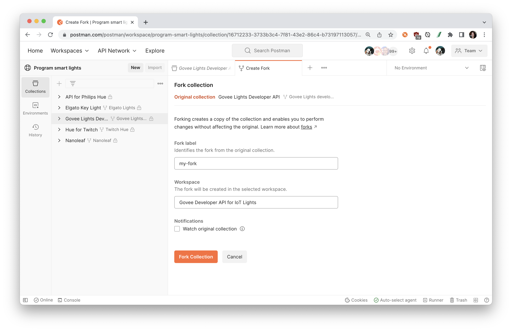
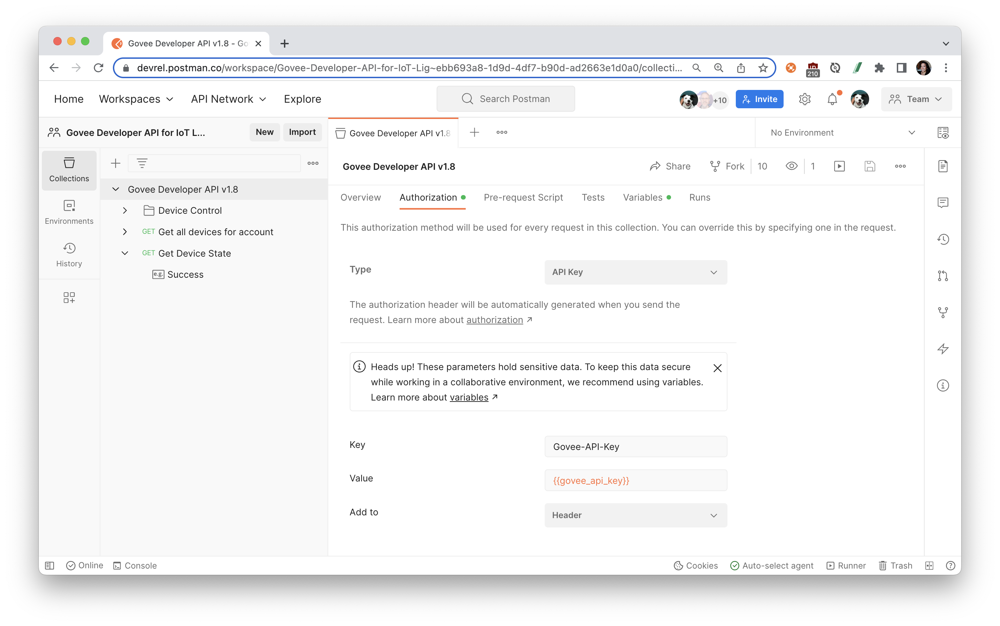
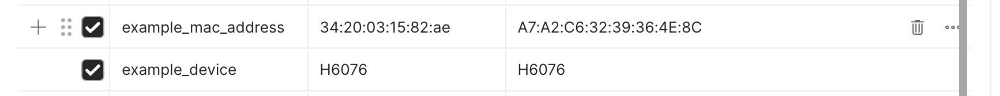

This tutorial is based on the official Govee Developer API v2.0 as documented at this URL: https://govee-public.s3.amazonaws.com/developer-docs/GoveeDeveloperAPIReference.pdf
Prerequisites
- a Postman Account
- a Govee smart device
What You'll Learn
- Authorize the Govee API using variables
- Start making API calls with Postman
- Control your smart devices using the Govee API
What You'll Need
What You'll Build
- A Postman Collection with authorized API requests
To get started, let's fork the Govee Lights Developer API collection in the Program smart lights public workspace to our own workspace in Postman to work on it.
Fork the following collection.

Enter a label for your fork and select the workspace to fork the collection:

In the next step, we will collect the required Govee information and work in our newly forked collection.
Govee API key
You will need a Govee Developer API key to authenticate your API requests.
- Download and open the Govee Home mobile app
- Go to the account Settings, and select "Apply for API key"
- Fill out your name and your reason (e.g. "to demo home automation") and submit
- Within a few minutes, you should receive an email with your API key to the email address you entered when registering a Govee account.
Select the Postman collection that you forked to your workspace. Find the Variables tab, and paste your API key as the govee_api_key variable value.
If you are working in a public or team workspace, you may want to create a Postman environment and use "Current value" to prevent unintentional disclosure of sensitive data.

Authentication
In the previous step, you entered your Govee API key as a variable. Select the collection, and find the Authorization tab. Notice that this collection is using a collection-level authorization helper, so every request within this collection can use the same authorization method. Hover over the referenced variable to see how Postman is resolving the variable value. If you're using an environment, make sure to select it as an active environment.

Postman has been configured to add a header containing your Govee API key to each request within this collection, unless otherwise indicated. Select the request "Get Device State", and find the Headers tab. You may need to expand the auto-generated headers to verify that Postman has indeed added the properly configured header.

Make an API call
Hit Send to make your first API call and to "Get Device State". Make a note of the device and model properties returned in the successful API response.

Save that data as Postman variables respectively called example_mac_address and example_device in your collection or environment

Find a different request called "Set Color", and update the RGB values to your preference. Hit Send, and watch the color of your smart light change.

Now that you made your first few calls with the Govee API, continue exploring the other endpoints in the Govee Lights Developer API collection. You can string together multiple API calls to create a custom theme or effect, or coordinate a schedule to turn on and off the lights.
What we've covered
- Authorize the Govee API using variables
- Start making API calls with Postman
- Control your smart devices using the Govee API
Additional resources
To continue your journey with smart lights, here are some additional resources to check out.

- Review other public APIs in the Program smart lights public workspace and explore more home automation APIs in the Postman Network
- Combine multiple APIs within the same collection to automate workflows with collection scripts or Postman Flows
- Learn about other protocols used with Internet of Things (IoT) automation, such as WebSockets